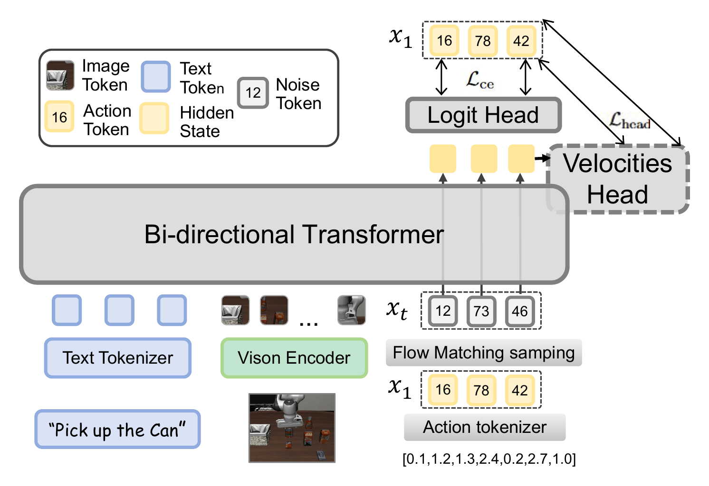
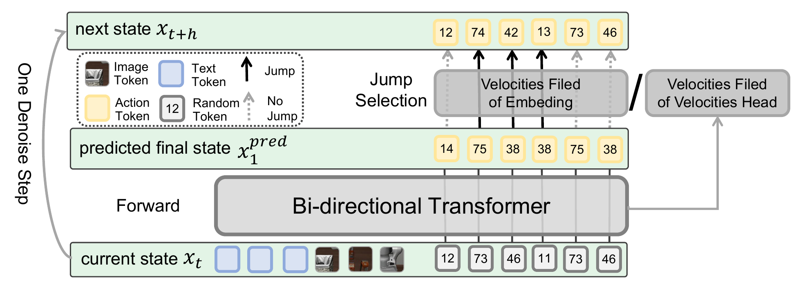
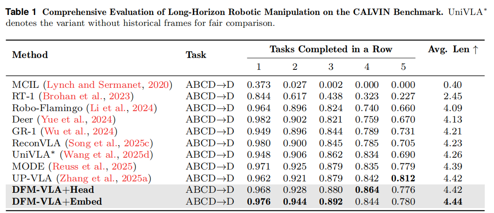
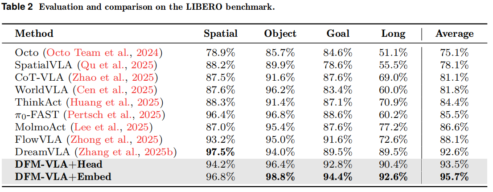
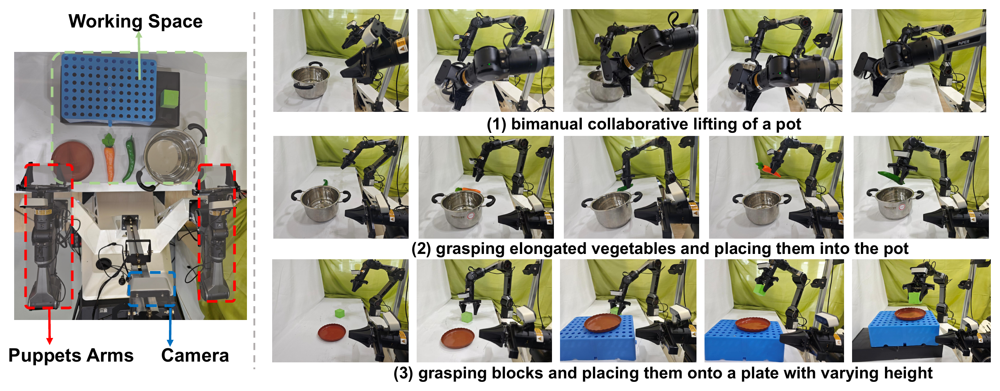
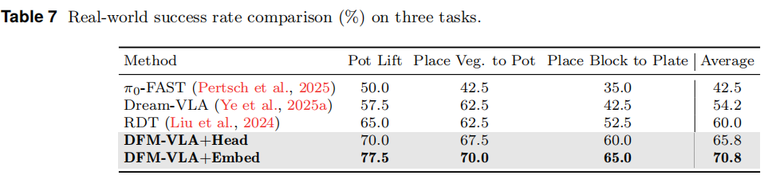

Iterative Action Refinement for Robot Manipulation via Discrete Flow Matching
Vision-Language-Action models that use discrete action tokenization are increasingly popular for robotic manipulation, but existing decoding paradigms remain constrained by a shared weakness: once an action token is generated, it is usually fixed and cannot be corrected in later iterations.
DFM-VLA addresses this limitation with discrete flow matching for iterative action refinement. Instead of committing to a final token sequence in one pass, DFM-VLA models a token-level probability velocity field that updates the full action sequence over multiple refinement steps. The paper studies both an action-embedding-guided velocity formulation and an auxiliary velocity-head formulation.
A two-stage decoding pipeline combines iterative refinement with deterministic validation for stable convergence. Across CALVIN, LIBERO, and real-world manipulation, DFM-VLA consistently improves manipulation quality while keeping strong inference efficiency, reaching 4.44 average success length on CALVIN and 95.7% average success rate on LIBERO.
Previously generated action tokens can be revised instead of being permanently fixed after one prediction.
DFM-VLA learns token-level transition rates that guide action updates toward cleaner trajectories.
Iterative refinement is followed by deterministic validation for more stable final action sequences.
Adaptive KV caching provides up to 2.4x latency speedup over autoregressive decoding while preserving performance.
Unified discrete token modeling with flow-based action refinement

Training schematic of DFM-VLA. The model predicts clean actions from noised action tokens and learns the velocity field during training.
DFM-VLA follows a UniVLA-style discrete formulation where language, third-view images, wrist-view images, and actions are all represented as discrete tokens.
The model predicts a clean target action sequence and constructs a probability velocity field that tells each token how to move toward better actions over time.
The paper studies two constructions: an embedding-guided formulation built from token distances and a separate velocity head that predicts replacement rates directly.
Inference first performs stochastic iterative refinement with CTMC Euler updates, then switches to a short deterministic validation phase for stable final convergence.

Inference visualization of one refinement step. DFM-VLA updates action tokens iteratively instead of fixing them after a single prediction.
Simulation and real-world evaluations of iterative action refinement

Simulation benchmark figure on CALVIN.

Simulation benchmark figure on LIBERO.

Experimental setup and representative real-world task scenes.
The real-world average of 70.8% surpasses RDT by 10.8 points and Dream-VLA by 16.6 points, showing that iterative refinement remains highly competitive outside simulation.

Real-world performance comparison across the three tasks.
Representative real-world rollouts from the three DFM-VLA tasks in the paper.
The first row combines one Pot Lift rollout with two Place Veg. to Pot rollouts.
Place a block onto a plate with changing height and spatial layout.
Representative real-world rollouts of DFM-VLA on "Pot Lift", "Place Veg. to Pot", and "Place Block to Plate", showing stable task execution across coordinated bimanual manipulation, varied object poses, and changing spatial layouts.
@misc{chen2026dfmvla,
title = {DFM-VLA: Iterative Action Refinement for Robot Manipulation via Discrete Flow Matching},
author = {Jiayi Chen and Wenxuan Song and Shuai Chen and Jingbo Wang and Zhijun Li and Haoang Li},
year = {2026},
note = {Preprint},
howpublished = {Project PDF: dfmvla_arxiv_/paper.pdf}
}